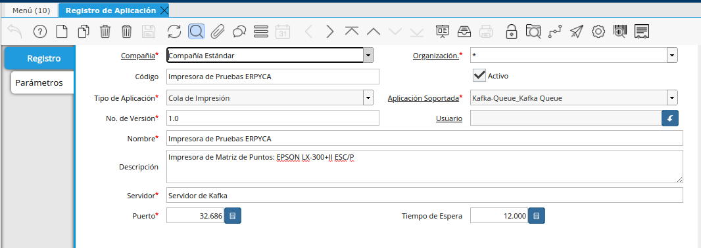
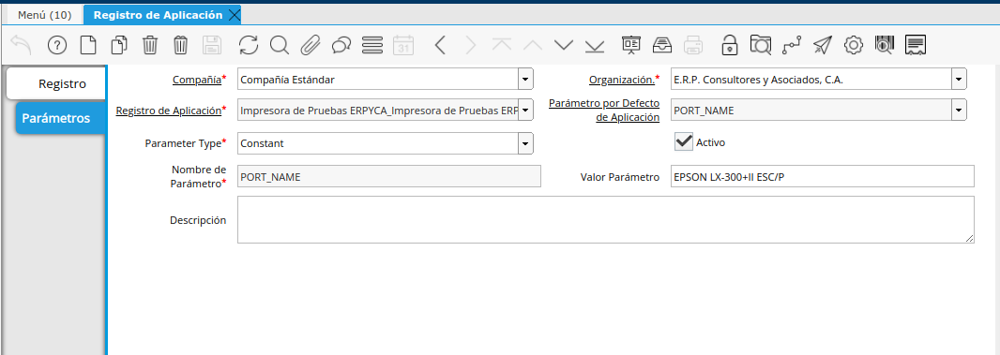
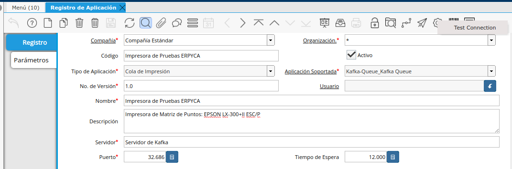
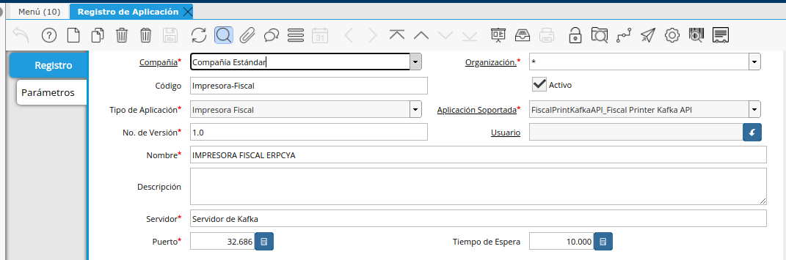
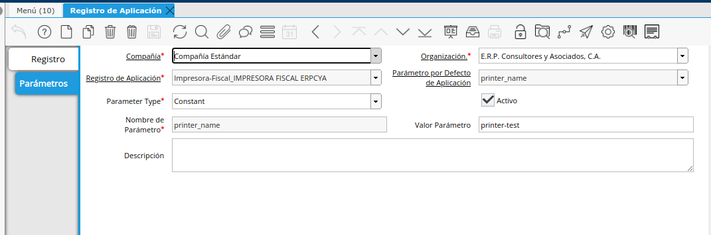
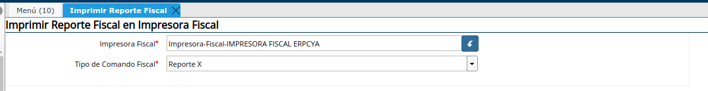

Configuración Cliente de Impresión en ADempiere
En ADempiere la Configuración (Local-Printing-All-In-One-DotNet) se realiza en la ventana Registro de Aplicación, la configuración a emplear dependera del uso final de la aplicación ya que puede controlar a impresoras fiscales de The Factory HKA y Imprimir PDF.
Configurar la aplicación para Imprimir PDF (Documentos) desde ADempiere
Dirijase a la ventana registros de aplicación y cree un nuevo registro llenando los siguientes campos.

Código: Codigo Descriptivo para identificar la impresora
Tipo de Aplicación: Cola de Impresión
Aplicación Soportada: Kafka-Queue_Kafka Queue
Nombre: Nombre Descriptivo para identificar la impresora
Descripción: En está sección se puede Decribir la impresora o la ubicación de la misma para un mejor referencia para identificarla
Servidor: Dominio o Dirección IP donde se encuentra ejecutandose el servicio de cola de Kafka.
Puerto: Puerto por el cual responde el servicio de cola de Kafka.
Una vez llenos los campos anteriores se debe ingresar en la pestaña paramteros, alli deben estar 2 registros PORT_NAME y QUEUE_NAME
PORT_NAME: Corresponde al nombre por el cual se va a identificar la impresora dentro de la cola de impresión, se puede colocar el departamento o el nombre que tiene la impresora en windows

QUEUE_NAME: Corresponde al Nombre de la cola de impresión.
Prueba de impresión:
Este paso es importante, debido a que en este punto es donde se crea la cola de impresión, para que ADempiere envie los Documentos y el Cliente de Impresión Todo en Uno los reciba y los envie a la impresora, cuande es ejecute el proceso Test Conectión inmediatamente se enviara a la cola de impresión un documento aleatorio desde ADempiere (Es recomendable hacer esto antes de iniciar la configuración en Windows de la aplicación).

El Resultado de está prueba es el siguiente se imprime un documento en la impresora prederterminada del sistema operativo.
Configurar la aplicación para controlar una impresora Fiscal
Dirijase a la ventana registros de aplicación y cree un nuevo registro llenando los siguientes campos.

Código: Codigo Descriptivo para identificar la impresora
Tipo de Aplicación: Impresora Fiscal
Aplicación Soportada: FiscalPrintKafkaAPI_Fiscal Printer Kafka API
Nombre: Nombre Descriptivo para identificar la impresora
Descripción: En está sección se puede Decribir la impresora o la ubicación de la misma para un mejor referencia para identificarla
Servidor: Dominio o Dirección IP donde se encuentra ejecutandose el servicio de cola de Kafka.
Puerto: Puerto por el cual responde el servicio de cola de Kafka.
Una vez llenos los campos anteriores se debe ingresar en la pestaña paramteros, alli deben estar 2 registros PORT_NAME y QUEUE_NAME
printer_name: Corresponde al nombre por el cual se va a identificar la impresora dentro de la cola de impresión.

port_name: Corresponde al Puerto COM al que se encuentra conectado la impresora.
Prueba de impresión:
Este se debe realizar luego de realizar la configuración en Windows de la aplicación(Local-Printing-All-In-One-DotNet). Se Debe ejecutar el proceso Imprimir Reporte Fiscal con los siguiente paramtros.

El Resultado de está prueba es que se imprime un Reporte X en la impresora fiscal, si esto no sucede se debe verificar la conexión de la impresora el puerto que se configuro tanto en ADempiere como en el archivo printer.yaml